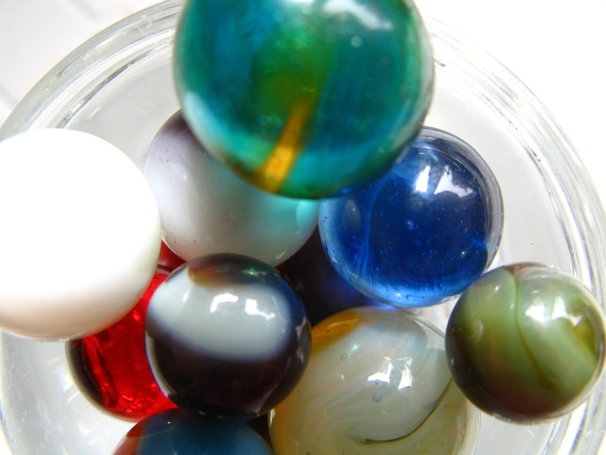

入居者の声(という見立て)
入居者の声
以下は制作側の創作で、実在のお客様の投稿ではありません。お店の設備・立地・提供内容を示すものでもなく、実際の口コミに差し替えるまでの仮置きです。
- 03イメージ例
「友だちと並んで座って、気づけば話し込んでいました。また行きたいです。」
- 07イメージ例
「ひとりでぼんやりするのにちょうどいい時間でした。」
- 12イメージ例
「Instagramで見ていた雰囲気のまま、ほっとしました。」
※ 3件とも制作側が作った文面です。投稿者名や評価点は載せていません。
